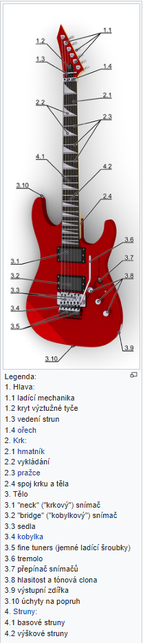

Elektrická kytara (správněji elektrofonická) je druh kytary, ve které elektromagnetické snímače převádějí chvění strun s ocelovým jádrem na elektrický proud, který je veden z kytary do zesilovače. S elektrickou kytarou se často používají nejrůznější efekty k úpravě zvuku. Používá jeden nebo více snímačů k převodu vibrací strun na elektrické signály, které jsou nakonec reprodukovány jako zvuk pomocí reproduktorů. Zvuk lze tvarovat nebo elektronicky měnit, aby se dosáhlo různých zabarvení nebo tónových kvalit, čímž se zcela liší od akustické kytary. Často se používají efekty jako reverb, distortion a „overdrive“; druhý je považován za klíčový prvek elektrické bluesové kytarové hudby a rockové hry na kytaru. Výsledný zvuk významně ovlivňuje i použitý zesilovač a reproduktor. Kytary bývají nejrůznějších tvarů.
Elektrická kytara byla vynalezena v roce 1932 a přijali ji hráči jazzové hudby, kteří chtěli hrát jednohlasá kytarová sóla ve velkých bigbandových souborech. Mezi první zastánce elektrické kytary patřili Les Paul, Lonnie Johnson, Sister Rosetta Tharpe, T-Bone Walker a Charlie Christian. Během padesátých a šedesátých let se elektrická kytara stala nejdůležitějším nástrojem populární hudby. Vyvinul se z ní nástroj, který je schopen mnoha zvuků a stylů v žánrech od popu a rocku po country, blues a jazz. Sloužila jako hlavní součást ve vývoji elektrického blues, rock and rollu, rockové hudby, heavy metalu a mnoha dalších hudebních žánrů.
Popis elektrické kytary
Druhy elektrických kytar
- Stratocaster
- Superstrat
- Telecaster
- Les Paul
- SG
- Hard and Heavy
- Semiakustické kytary